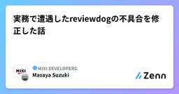
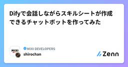
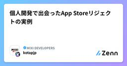
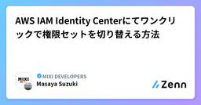
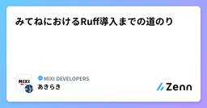
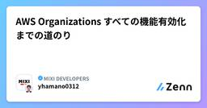
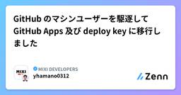
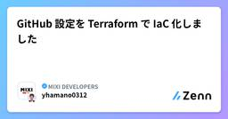
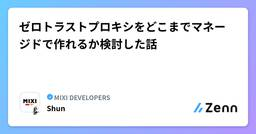

MIXI DEVELOPERSのフィード
https://zenn.dev/p/mixi
株式会社MIXIのZenn版エンジニアブログです。実務で得た技術知見や個人的に調べたことなどを紹介しています。
フィード
GetXの課題とriverpodへの移行
MIXI DEVELOPERSのフィード
GetXについて私が現在開発に携わっているアプリはFlutterで開発されており、その根幹部分に大きく依存しているパッケージがGetXです。GetXは、主に状態管理の選択肢の一つとして挙がるパッケージですが、それ以外にも多くの機能を提供しています。特に「状態管理、DI管理（依存性注入）、ルーティング管理」の3つが主要な機能です。他にも isBlank や isEmail などの便利関数、ロケールを使った多言語対応、Key-Valueストアの管理なども提供されています。GetXは、Flutter初心者にとって難しいBuildContextを上手く隠蔽し（GetXを使用すると基本的...
4時間前

実務で遭遇したreviewdogの不具合を修正した話
MIXI DEVELOPERSのフィード
本記事は「MIXI DEVELOPERS Advent Calendar 2024」の21日目の記事です。株式会社MIXIでサロンスタッフ予約サービス「minimo」のバックエンドエンジニアをしている鈴木です。実務で遭遇したreviewdogの不具合を修正した際の話を書いていきます。実務を起点としたOSSへの貢献の事例として読んでいただければ幸いです。 reviewdogとはhttps://github.com/reviewdog/reviewdogLinterによる指摘事項をGitHubのレビューコメント等の形で出力してくれるツールです。Linterによる指摘事項を分か...
7時間前

Difyで会話しながらスキルシートが作成できるチャットボットを作ってみた
MIXI DEVELOPERSのフィード
!この記事は MIXI DEVELOPERS Advent Calendar 2024 / Dify Advent Calendar 2024 の20日目の記事です。 はじめに皆さん自分の職務経歴書やスキルシートはどのように書きますか？カオナビのような社内のタレントマネジメントシステムへの登録や、転職サイトへの登録などスキルシートの記載が必要になる機会はあると思います。毎回スキルシートをゼロから書くのはとても時間がかかりますよね。しかも一度作ってしまっても定期的に直近の業務内容アップデートの記載も必要で大変です。更に記載すべき内容も何をどのように書けばいいのか迷うことも...
1日前

個人開発で出会ったApp Storeリジェクトの実例
MIXI DEVELOPERSのフィード
!この記事は MIXI DEVELOPERS Advent Calendar 2024シリーズ 1 の 17 日目の記事です。 はじめにこの記事では、私が個人開発で経験した App Store のリジェクト事例とその解決方法について紹介します。これまでに数々のリジェクトを経験しました。よくあるものや印象に残っているものをピックアップして紹介します。基本的に審査はガイドラインに忠実ですが、実際にガイドラインに基づきどのようにリジェクトされるのか、これからアプリを提出しようとする開発者の手助けになればと思います。 概要リジェクトを受けた主なガイドラインは以下の通りです：...
4日前

AWS IAM Identity Centerにてワンクリックで権限セットを切り替える方法
MIXI DEVELOPERSのフィード
本記事は「MIXI DEVELOPERS Advent Calendar 2024」の13日目の記事です。株式会社MIXIでサロンスタッフ予約サービス「minimo」のバックエンドエンジニアをしている鈴木です。AWSのIAM Identity Centerにてワンクリックで権限セットを切り替える方法について書いていきます。 背景AWSのIAM Idenitity Centerでマネジメントコンソールにログインしたい場合、次の手順でログインします。AWS access portalを開くログインしたい権限セットをクリックしかし、弱い権限の権限セットでマネジメントコンソー...
4日前

みてねにおけるRuff導入までの道のり 2
2
MIXI DEVELOPERSのフィード
はじめにこれは、MIXI DEVELOPERS Advent Calendar 2024 の16日目の記事です。みてねプロダクト開発部 Data Engineeringグループの 鶴田 です。この記事では、「家族アルバムサービス みてね (以下みてね)」における、Python系リポジトリへのRuff導入までの数年にわたる取り組みを説明します。 2021年前半 (入社当時): コーディング規約だけの世界2021年 (私の入社当時)、みてねには以下のようなPythonコーディング規約が存在しました。コーディングスタイルはpep8に準拠しましょうdocstringを書きま...
5日前

AWS Organizations すべての機能有効化までの道のり 2
MIXI DEVELOPERSのフィード
本記事は MIXI DEVELOPERS Advent Calendar 2024 のシリーズ2 15日目の記事です。サロンスタッフ予約サービス minimo のソフトウェアエンジニアをしている yhamano0312 です。minimo に異動してくる前は事業部横断でエンジニアリングを支援する部署に所属していたのですが、その時に実施した AWS Organizations のすべての機能有効化をどのように進めたか紹介します。 AWS Organizations とは部署、プロダクト、用途によって AWS を利用する上でのセキュリティレベルや運用方法は大きく異なります。それらワ...
7日前

GitHub のマシンユーザーを駆逐して GitHub Apps 及び deploy key に移行しました
MIXI DEVELOPERSのフィード
本記事は MIXI DEVELOPERS Advent Calendar 2024 のシリーズ1 14日目の記事です。サロンスタッフ予約サービス minimo のソフトウェアエンジニアをしている yhamano0312 です。minimo に異動してくる前は事業部横断でエンジニアリングを支援する部署に所属していたのですが、その時に支援していたソーシャルベッティングサービス TIPSTAR で行なった GitHub マシンユーザーからの GitHub Apps 及び deploy key への移行について紹介します。 GitHub Enterprise Cloud 導入MIXI ...
8日前

GitHub 設定を Terraform で IaC 化しました
MIXI DEVELOPERSのフィード
本記事は MIXI DEVELOPERS Advent Calendar 2024 のシリーズ2 14日目の記事です。サロンスタッフ予約サービス minimo のソフトウェアエンジニアをしている yhamano0312 です。minimo に異動してくる前は事業部横断でエンジニアリングを支援する部署に所属していたのですが、その時に支援していたソーシャルベッティングサービス TIPSTAR で行なった GitHub 設定を Terraform で IaC 化したことについて紹介します。 はじめにMIXI では 2023 年より全社的に GitHub Enterprise Clou...
8日前

ゼロトラストプロキシをどこまでマネージドで作れるか検討した話 1
MIXI DEVELOPERSのフィード
この記事は MIXI DEVELOPERS Advent Calendar 2024 の 6 日目の記事です。え？なんで 13 日に投稿しているのかって？色々あったんですよ。ええ。というわけで、ここ最近作っているゼロトラストプロキシの話です。最近、社内で利用している様々なウェブサイトに対して、ページの閲覧を制限させたいという話が出てきました。条件としては色々あり、アクセスするユーザーの所属組織、閲覧するページ、その他の条件などに応じて、ページの閲覧許可を設定したいとのことです。ページごとに閲覧を制限したいとなると、リクエストを仲介して L7 での制御をしたくなります。さらに追加で...
8日前

みてねにおけるDynamoDBのコスト削減施策
MIXI DEVELOPERSのフィード
はじめにこれは、MIXI DEVELOPERS Advent Calendar 2024 の13日目の記事です。みてねプロダクト開発部 Data Engineeringグループの 鶴田 です。この記事では、今年実施した 家族アルバム みてね におけるDynamoDBのコスト削減施策について説明します。 DynamoDBとはDynamoDBはAmazonが提供するフルマネージドなNoSQLデータベースサービスであり、高度なスケーラビリティと可用性、そして低レイテンシを特徴としています。 みてねにおける DynamoDB の利用「家族アルバム みてね (以下「みてね」)...
8日前
初参加のISUCON14で入賞したMIXIチームのやったこと
MIXI DEVELOPERSのフィード
!この記事は MIXI DEVELOPERS Advent Calendar 2024シリーズ 1 の 12 日目の記事です。 はじめに本記事は 2024/12/8(日)に開催された ISUCON14 に対する MIXI チームでの挑戦の記録です。大会に向けた準備や当日の取り組み、振り返りをまとめています。記事の構成は ISUCON13 優勝者のチーム NaruseJun 所属のとーふとふ さんの記事を参考にさせていただきました。記事の構成のみならず素振り期間から当日まで大変参考になりました。https://zenn.dev/tohutohu/articles/923bd...
9日前
Hydra + PyTorch Lightningを使ったDeep Learning モデル構築テンプレート紹介
MIXI DEVELOPERSのフィード
始めにこれはMIXI DEVELOPERS Advent Calendar 2024の8日目の記事です。こんにちは、みてねプロダクト開発部Data Engineeringグループの kittchy です。現在、MLエンジニアとしてML解析パイプラインの整備やMLモデルの構築などを担当しています。その中でも特に研究開発の一環として、PyTorchを用いたモデルの構築や学習を行っています。本記事では、PyTorchによるDeep Learningモデルの学習において、私が最近よく使用している便利なツールであるHydraとPyTorch Lightningの紹介を行います。また、as...
13日前
闇バイト強盗の事案からオンラインサービスの認証強化について考えた話
MIXI DEVELOPERSのフィード
ritou です。MIXI DEVELOPERS Advent Calendar 2024 12/3の記事です(書くのだいぶ遅れましたすみません)https://qiita.com/advent-calendar/2024/mixi最近は社内のサービスから利用されるID管理機能を担当しています。当然ながら、単一サービスにおけるID管理機能複数サービスが利用するID基盤が提供する機能というのは求められる要件も変わります。どのサービスにも求められる機能もあれば、特定のサービスのみに求められる機能もあります。あることを実現したいとなったときにID基盤がどの機能をどの形で提供...
16日前
PRを作るときに気を付けている2つのこと
MIXI DEVELOPERSのフィード
!これは MIXI DEVELOPERS Advent Calendar 2024 の5日目の記事です。 はじめにこんにちは！毎日寒いですね！昨日に引き続き、みてねチームでCREとして働いているささたつからお届けします。さて、エンジニアは日々、PRをレビューしたり、レビューしてもらったりしますよね？この記事では、僕がPRを作るときに気を付けていることを2つ、紹介します。 ひとつのことだけをやるまずはこれ。1つのPRに複数の変更を混ぜない、です。1つのPRには「ひとつのこと」だけを含めるべきです。あれもこれも、、と複数の変更を混ぜてしまうと、こんな問題が発生します。...
16日前
コードレビューでよくあったコメント9選 〜Terraform編〜
MIXI DEVELOPERSのフィード
!この記事は MIXI DEVELOPERS Advent Calendar 2024シリーズ2の4日目の記事です。 この記事についてkotapjp さんの記事「Go初学者へのコードレビューでよくあったコメント20選」やriddle_tec さんの記事「コードレビューでよくお願いする、コメントの追加のパターン7選」が好評だったようなので、便乗して「Terraform初学者へのコードレビューでよくあったコメント9選」を書いてみました。https://zenn.dev/mixi/articles/f07be7f476e2f3https://zenn.dev/mixi/art...
17日前
SendGridのWebhookを受け取ってログを吐くだけのサービスを作ったときにやったことまとめ
MIXI DEVELOPERSのフィード
!これは MIXI DEVELOPERS Advent Calendar 2024の4日目の記事です。 はじめにみてねプロダクト開発部 プラットフォームグループ CREチームのこすげです。この記事ではSendGridのWebhook機能を使ってログをBigQueryに保存して計測、可視化までできるようにしたときにやったことをまとめた記事になります。当初は適当にHTTP受け取れるCloud Run使ってチャチャっと作ればいいかなーと思っていました。ですが、CREチーム内で色々すり合わせ行くうちに考えないといけないや、作る前に知っておかないといけないことなど出てきて、サービス...
17日前
コードレビューでよくお願いする、コメントの追加のパターン7選
MIXI DEVELOPERSのフィード
同僚が書いた Go初学者へのコードレビューでよくあったコメント20選 では、Go初学者へのコードレビューでよくあったコメント20選を紹介しました。今回は私が コードレビューでよくお願いするコメント追加のお願い について紹介します。 前提：コメントを書いて欲しいわけコードレビューでコメントを書いて欲しい理由は以下の通りです。プロダクト、サービスの持続可能な開発を支えるため人が入れ替わっても開発の迷いを可能な限り減らすため!PoC 開発や、短い期間で終わる開発であれば必要性は低いですが、持続可能な開発を行う場合はコメントを書くことが重要だと考えています。 具体的なコ...
1ヶ月前
Go初学者へのコードレビューでよくあったコメント20選
MIXI DEVELOPERSのフィード
はじめにこんにちは、ソーシャルベッティング事業本部 海外ベッティング事業部の山崎です。本記事では、Effective GoやGoogle のスタイルガイド、Code Review Commentsといった公式資料、Future Architectの記事などを参考に、Go を初めて触る開発者を対象にした汎用的なレビューコメントの 20 選を紹介します。大きく以下の４つのセクションに分けました言語仕様に関わる内容標準パッケージの使い方エラーの扱い方単体テスト!レビューを受ける側のスキルセットは他の言語での開発経験があるが Go を業務でまあり使ったことがない開発者を...
1ヶ月前
初めてEMになった時にやって良かったこと
MIXI DEVELOPERSのフィード
はじめにminimo事業部で EM をしている本間です。ある日マネジメントの仕事に挑戦してみないかと言われてからはや半年が経過しました。初めてのマネジメント職は想像以上に難しく大変なこともあったのですが、半年経ってこれはやって良かったと思うことを書いていこうと思います。 経歴 & 自己紹介2018年に新卒で MIXI に入社し、最初3年半は CRE (Customer Reliability Engineer) として Customer Support の業務改善を、その後新規事業に異動しサーバーサイドエンジニア兼プロジェクトマネージャー（何でも屋さん）として働い...
1ヶ月前